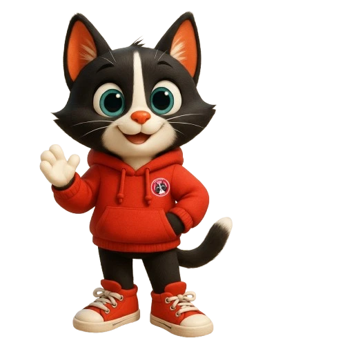

Central Cat's menyediakan layanan mandi kucing dan grooming kucing profesional di Tangerang — melayani area Pasar Kemis, Rajeg, dan sekitarnya. Petshop lengkap dengan standar higienis dan perawatan penuh kasih.
Lihat Layanan KamiCentral Cat's adalah petshop lengkap untuk hewan peliharaan dan layanan grooming profesional khusus kucing di Tangerang. Kami berkomitmen memberikan perawatan terbaik untuk setiap anabul.
Dengan standar layanan yang terjaga dan tim yang peduli terhadap kesejahteraan kucing, Central Cat's menghadirkan berbagai layanan mulai dari grooming, treatment kesehatan bulu dan kulit, hingga penyediaan produk petshop berkualitas untuk kebutuhan harian kucing.
Layanan grooming kucing profesional dan mandi kucing di Tangerang dengan standar higienis, aman, dan penuh perhatian. Melayani area Pasar Kemis, Rajeg, dan sekitarnya.
Layanan mandi kucing dan grooming profesional di Tangerang meliputi pembersihan bulu, pengeringan, potong kuku, pembersihan telinga, serta perawatan dasar agar kucing tetap bersih, sehat, dan nyaman.
Perawatan khusus treatment kutu kucing di Tangerang untuk membantu mengatasi kutu, menjaga kesehatan kulit serta merawat bulu kucing agar tetap bersih dan bebas parasit.
Layanan penitipan kucing di Tangerang yang aman dan nyaman dengan pengawasan rutin serta lingkungan bersih untuk menjaga kenyamanan anabul selama dititipkan.
Central Cat's menyediakan berbagai kebutuhan hewan peliharaan berkualitas untuk menunjang kesehatan, kenyamanan, dan kebahagiaan anabul Anda setiap hari.
Berbagai pilihan makanan kucing berkualitas, vitamin, dan suplemen nutrisi untuk menjaga kesehatan serta daya tahan tubuh anabul.
Menyediakan berbagai perlengkapan kucing seperti litter box, pasir kucing, mainan, kandang, serta aksesoris yang menunjang kenyamanan anabul.
Produk perawatan seperti shampoo khusus kucing, sisir grooming, dan perlengkapan kebersihan untuk menjaga bulu tetap sehat dan bersih.
Berikut beberapa ulasan pelanggan yang telah menggunakan layanan grooming dan petshop Central Cat's. Kepuasan dan kenyamanan anabul menjadi prioritas utama dalam setiap layanan kami.
Datang langsung ke cabang terdekat untuk layanan petshop & grooming kucing terbaik.
Rajeg Gardenia E11, Kecamatan Rajeg, Kabupaten Tangerang, Banten
🕒 Buka setiap hari: 08.00 – 21.00 WIB
Union Square RMR 03, Kecamatan Pasar Kemis, Kabupaten Tangerang, Banten
🕒 Buka setiap hari: 08.00 – 21.00 WIB